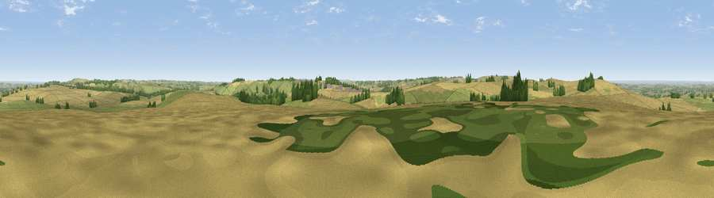

Viewpoint near Bishopstone
#15373 in England · top 25% of its area beats it · near BishopstoneWhere it is
The exact computed spot (SU 25775 81025). Click the marker for map links.
The view, rendered

A 360° render of this exact spot computed from the terrain model, tree cover and land cover — summer colours, afternoon light, calibrated against photographs of famous viewpoints. Real trees, hedges and buildings will differ in detail.
The panorama
Grey silhouette: terrain skyline in each direction (720 bearings, Earth curvature and refraction included). Dashed green: skyline with trees (+15 m) and buildings (+8 m) as obstacles. Blue strip: how far the ground is visible on each bearing.
Where the view opens
Wedge length = distance to the farthest visible ground on that bearing (vegetation-aware). Rings at 10, 25 and 50 km.
What fills the view
58% cropland · 35% grassland · 7% woodland ·
Angular shares of the visible panorama (visual magnitude), not map area. Landscape diversity 0.39 (0–1 Shannon).
Key numbers
More beautiful places nearby
The staircase of upgrades: each row has a higher view potential than everything closer. Driving times are estimates from straight-line distance, calibrated against real road routing — check an actual route before setting out.
| Place | Direction | Drive | Score |
|---|---|---|---|
| Viewpoint near Hinton Parva | W · 2 km | ~6 min | 66.2 |
| Charlbury Hill | WNW · 2 km | ~6 min | 70.9 |
| Viewpoint near Liddington | WSW · 4 km | ~10 min | 74.4 |
| Viewpoint near Woolstone | NE · 7 km | ~14 min | 76.7 |
| Martinsell viewpoint | SSW · 19 km | ~32 min | 77.3 |
| Viewpoint near Leckhampton | NW · 48 km | ~69 min | 77.8 |
| Viewpoint near Great Witcombe | NW · 50 km | ~71 min | 80.5 |
| Nottingham Hill | NNW · 55 km | ~77 min | 80.9 |
51.52755, -1.62985 · source: screening · position refined by local search. Computed location — check access rights before visiting.